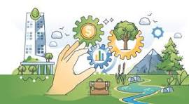

Desarrollo Humano y Social

Políticas Públicas del Estado de Chihuahua Se enfoca en reducir la desigualdad, mejorar el acceso a servicios básicos como salud, educación y vivienda, y promover la inclusión social. Estas acciones buscan dignificar la vida de todos los chihuahuenses, especialmente de los sectores más vulnerables. [chihuahua.gob.mx] Justicia y Seguridad La seguridad pública es una prioridad. Se han implementado estrategias para combatir la delincuencia y mejorar la percepción de seguridad, lo que ha resultado en una disminución de los índices delictivos y un aumento en la confianza ciudadana hacia las instituciones. [adiario.mx] Economía, Innovación y Desarrollo Sustentable Chihuahua promueve el crecimiento económico equilibrado entre sus regiones, fomenta la innovación tecnológica y apoya la creación de empleos bien remunerados. Esto ha contribuido a que el estado mejore su posición en el Índice de Competitividad Estatal a nivel nacional. [adiario.mx] Educación, Cultura y Deporte Se han fortalecido programas educativos, culturales y deportivos como pilares del desarrollo humano. Estas áreas son clave para formar ciudadanos preparados y comprometidos con el progreso del estado. [tiempo.com.mx] Infraestructura y Medio Ambiente Se han desarrollado proyectos para mejorar el uso del suelo, la infraestructura industrial y urbana, y la sostenibilidad ambiental. Esto incluye inversiones en transporte, conectividad y servicios públicos que favorecen tanto a la ciudadanía como a los inversionistas. [implanchihuahua.org] ¿Cómo Benefician Estas Políticas a la Sociedad? Mejoran la calidad de vida al garantizar servicios básicos y derechos fundamentales. Fomentan el desarrollo económico, atrayendo inversiones y generando empleo. Promueven la seguridad y la justicia, creando entornos más tranquilos y confiables. Impulsan la educación y la cultura, fortaleciendo el tejido social.
Justicia y Seguridad
Políticas Públicas del Estado de Chihuahua Desarrollo Humano y Social Se enfoca en reducir la desigualdad, mejorar el acceso a servicios básicos como salud, educación y vivienda, y promover la inclusión social. Estas acciones buscan dignificar la vida de todos los chihuahuenses, especialmente de los sectores más vulnerables. [chihuahua.gob.mx] La seguridad pública es una prioridad. Se han implementado estrategias para combatir la delincuencia y mejorar la percepción de seguridad, lo que ha resultado en una disminución de los índices delictivos y un aumento en la confianza ciudadana hacia las instituciones. [adiario.mx] Economía, Innovación y Desarrollo Sustentable Chihuahua promueve el crecimiento económico equilibrado entre sus regiones, fomenta la innovación tecnológica y apoya la creación de empleos bien remunerados. Esto ha contribuido a que el estado mejore su posición en el Índice de Competitividad Estatal a nivel nacional. [adiario.mx] Educación, Cultura y Deporte Se han fortalecido programas educativos, culturales y deportivos como pilares del desarrollo humano. Estas áreas son clave para formar ciudadanos preparados y comprometidos con el progreso del estado. [tiempo.com.mx] Infraestructura y Medio Ambiente Se han desarrollado proyectos para mejorar el uso del suelo, la infraestructura industrial y urbana, y la sostenibilidad ambiental. Esto incluye inversiones en transporte, conectividad y servicios públicos que favorecen tanto a la ciudadanía como a los inversionistas. [implanchihuahua.org] ¿Cómo Benefician Estas Políticas a la Sociedad? Mejoran la calidad de vida al garantizar servicios básicos y derechos fundamentales. Fomentan el desarrollo económico, atrayendo inversiones y generando empleo. Promueven la seguridad y la justicia, creando entornos más tranquilos y confiables. Impulsan la educación y la cultura, fortaleciendo el tejido social.
Justicia y Seguridadi
Políticas Públicas del Estado de Chihuahua Desarrollo Humano y Social Se enfoca en reducir la desigualdad, mejorar el acceso a servicios básicos como salud, educación y vivienda, y promover la inclusión social. Estas acciones buscan dignificar la vida de todos los chihuahuenses, especialmente de los sectores más vulnerables. [chihuahua.gob.mx] Justicia y Seguridad La seguridad pública es una prioridad. Se han implementado estrategias para combatir la delincuencia y mejorar la percepción de seguridad, lo que ha resultado en una disminución de los índices delictivos y un aumento en la confianza ciudadana hacia las instituciones. [adiario.mx] Chihuahua promueve el crecimiento económico equilibrado entre sus regiones, fomenta la innovación tecnológica y apoya la creación de empleos bien remunerados. Esto ha contribuido a que el estado mejore su posición en el Índice de Competitividad Estatal a nivel nacional. [adiario.mx] Educación, Cultura y Deporte Se han fortalecido programas educativos, culturales y deportivos como pilares del desarrollo humano. Estas áreas son clave para formar ciudadanos preparados y comprometidos con el progreso del estado. [tiempo.com.mx] Infraestructura y Medio Ambiente Se han desarrollado proyectos para mejorar el uso del suelo, la infraestructura industrial y urbana, y la sostenibilidad ambiental. Esto incluye inversiones en transporte, conectividad y servicios públicos que favorecen tanto a la ciudadanía como a los inversionistas. [implanchihuahua.org] ¿Cómo Benefician Estas Políticas a la Sociedad? Mejoran la calidad de vida al garantizar servicios básicos y derechos fundamentales. Fomentan el desarrollo económico, atrayendo inversiones y generando empleo. Promueven la seguridad y la justicia, creando entornos más tranquilos y confiables. Impulsan la educación y la cultura, fortaleciendo el tejido social.
Educación, Cultura y Deporte

Políticas Públicas del Estado de Chihuahua Desarrollo Humano y Social Se enfoca en reducir la desigualdad, mejorar el acceso a servicios básicos como salud, educación y vivienda, y promover la inclusión social. Estas acciones buscan dignificar la vida de todos los chihuahuenses, especialmente de los sectores más vulnerables. [chihuahua.gob.mx] Justicia y Seguridad La seguridad pública es una prioridad. Se han implementado estrategias para combatir la delincuencia y mejorar la percepción de seguridad, lo que ha resultado en una disminución de los índices delictivos y un aumento en la confianza ciudadana hacia las instituciones. [adiario.mx] Economía, Innovación y Desarrollo Sustentable Chihuahua promueve el crecimiento económico equilibrado entre sus regiones, fomenta la innovación tecnológica y apoya la creación de empleos bien remunerados. Esto ha contribuido a que el estado mejore su posición en el Índice de Competitividad Estatal a nivel nacional. [adiario.mx] Se han fortalecido programas educativos, culturales y deportivos como pilares del desarrollo humano. Estas áreas son clave para formar ciudadanos preparados y comprometidos con el progreso del estado. [tiempo.com.mx] Infraestructura y Medio Ambiente Se han desarrollado proyectos para mejorar el uso del suelo, la infraestructura industrial y urbana, y la sostenibilidad ambiental. Esto incluye inversiones en transporte, conectividad y servicios públicos que favorecen tanto a la ciudadanía como a los inversionistas. [implanchihuahua.org] ¿Cómo Benefician Estas Políticas a la Sociedad? Mejoran la calidad de vida al garantizar servicios básicos y derechos fundamentales. Fomentan el desarrollo económico, atrayendo inversiones y generando empleo. Promueven la seguridad y la justicia, creando entornos más tranquilos y confiables. Impulsan la educación y la cultura, fortaleciendo el tejido social.
Infraestructura y Medio Ambiente
Políticas Públicas del Estado de Chihuahua Desarrollo Humano y Social Se enfoca en reducir la desigualdad, mejorar el acceso a servicios básicos como salud, educación y vivienda, y promover la inclusión social. Estas acciones buscan dignificar la vida de todos los chihuahuenses, especialmente de los sectores más vulnerables. [chihuahua.gob.mx] Justicia y Seguridad La seguridad pública es una prioridad. Se han implementado estrategias para combatir la delincuencia y mejorar la percepción de seguridad, lo que ha resultado en una disminución de los índices delictivos y un aumento en la confianza ciudadana hacia las instituciones. [adiario.mx] Economía, Innovación y Desarrollo Sustentable Chihuahua promueve el crecimiento económico equilibrado entre sus regiones, fomenta la innovación tecnológica y apoya la creación de empleos bien remunerados. Esto ha contribuido a que el estado mejore su posición en el Índice de Competitividad Estatal a nivel nacional. [adiario.mx] Educación, Cultura y Deporte Se han fortalecido programas educativos, culturales y deportivos como pilares del desarrollo humano. Estas áreas son clave para formar ciudadanos preparados y comprometidos con el progreso del estado. [tiempo.com.mx] Se han desarrollado proyectos para mejorar el uso del suelo, la infraestructura industrial y urbana, y la sostenibilidad ambiental. Esto incluye inversiones en transporte, conectividad y servicios públicos que favorecen tanto a la ciudadanía como a los inversionistas. [implanchihuahua.org] ¿Cómo Benefician Estas Políticas a la Sociedad? Mejoran la calidad de vida al garantizar servicios básicos y derechos fundamentales. Fomentan el desarrollo económico, atrayendo inversiones y generando empleo. Promueven la seguridad y la justicia, creando entornos más tranquilos y confiables. Impulsan la educación y la cultura, fortaleciendo el tejido social.
¿Cómo Benefician Estas Políticas a la Sociedad?
Políticas Públicas del Estado de Chihuahua Desarrollo Humano y Social Se enfoca en reducir la desigualdad, mejorar el acceso a servicios básicos como salud, educación y vivienda, y promover la inclusión social. Estas acciones buscan dignificar la vida de todos los chihuahuenses, especialmente de los sectores más vulnerables. [chihuahua.gob.mx] Justicia y Seguridad La seguridad pública es una prioridad. Se han implementado estrategias para combatir la delincuencia y mejorar la percepción de seguridad, lo que ha resultado en una disminución de los índices delictivos y un aumento en la confianza ciudadana hacia las instituciones. [adiario.mx] Economía, Innovación y Desarrollo Sustentable Chihuahua promueve el crecimiento económico equilibrado entre sus regiones, fomenta la innovación tecnológica y apoya la creación de empleos bien remunerados. Esto ha contribuido a que el estado mejore su posición en el Índice de Competitividad Estatal a nivel nacional. [adiario.mx] Educación, Cultura y Deporte Se han fortalecido programas educativos, culturales y deportivos como pilares del desarrollo humano. Estas áreas son clave para formar ciudadanos preparados y comprometidos con el progreso del estado. [tiempo.com.mx] Infraestructura y Medio Ambiente Se han desarrollado proyectos para mejorar el uso del suelo, la infraestructura industrial y urbana, y la sostenibilidad ambiental. Esto incluye inversiones en transporte, conectividad y servicios públicos que favorecen tanto a la ciudadanía como a los inversionistas. [implanchihuahua.org] Mejoran la calidad de vida al garantizar servicios básicos y derechos fundamentales. Fomentan el desarrollo económico, atrayendo inversiones y generando empleo. Promueven la seguridad y la justicia, creando entornos más tranquilos y confiables. Impulsan la educación y la cultura, fortaleciendo el tejido social.
Dejanos saber tus comentarios y retroalimentacion.
Para comentarios y retroalimentación, por favor escribe a: a396895@uach.mx